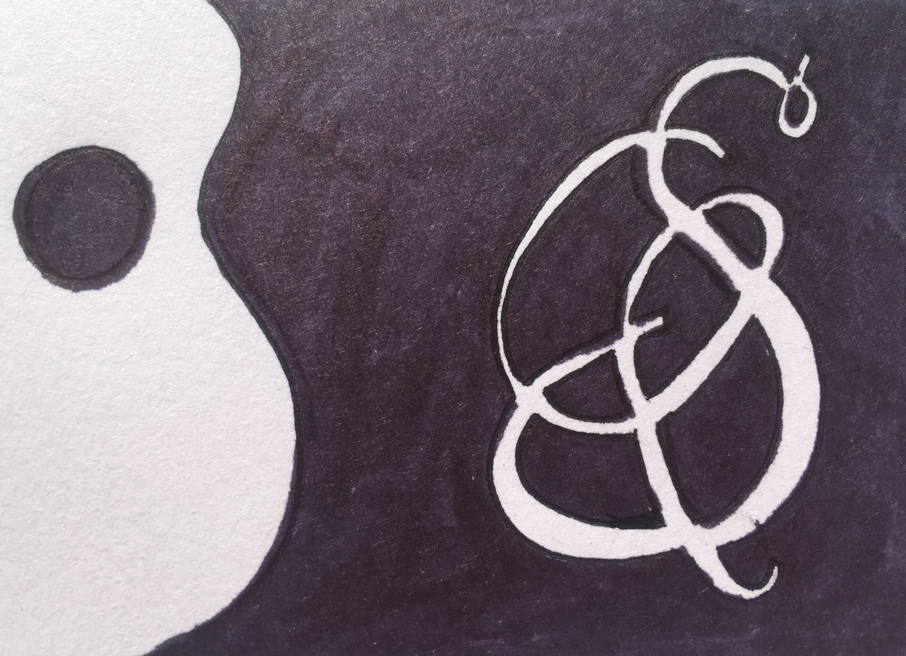

- 


"We were both so pleased with Barry. He was prompt, professional, fun and the perfect touch to a beautiful day. I will definitely hire him for our next occasion."
~ Morgan E.
Barry Seroff
Flute - Guitar - Shakuhachi - Composition
For over 20 years, Barry Seroff has been performing classical jazz, and popular music on guitar and flute in a variety of settings. From renaissance music to American standards and everything in between, he can bring a touch of class to any festive gathering. If your event calls for something more exotic, Barry can present the zen flute sounds of the shakuhachi. Barry can even bring the music straight to your guests as a "wandering musician". He can even compose music specially for the occasion. Barry is a master of his instruments and of the art of performing, and has a keen sense for how to accompany a room with his playing in a way that would enhance any gathering. For questions, pricing, and availability, head over to the contact page.
Elegance
In a world of increasingly eclectic musical tastes, it can be difficult to find a performer with a deep and natural appreciation of any particular style of music. And yet one does, that performer so often has a profound knowledge of only a single style, unfamiliar with anything else. Barry's lifelong dedication to his craft and keen imagination have given him unique insight into a variety of styles, with a particular emphasis on understanding and relating just how and why music affects us the many way that it does. The result is a quality of performance that could only come from lifelong commitment and experience.
Barry holds a deep reverence for music, a reverance that is immediately apparent the moment that he starts playing. He puts the whole of his intention into every performance. This creates an authentic ambiance that could only come from over two decades of internalizing music across the world and from over centuries. From Baroque to jazz, rock to Romantic, pop to modern classical, Barry's playing is an authentic contribution to any setting.
Professionalism
Prompt, reliable, and accommodating, Barry knows that when it comes to the entertainment for the evening, you want things to run as smoothly as possible. He's worked in settings ranging from the most casual to the most sophisticated and elegant, and understands what is necessary to create the proper atmosphere in either situation.
Barry is versatile, able to learn and adapt music that you would like for him to play or come up with a set of his own that sets the mood you're looking for for your event. Tell him what you envision, and he will take care of the rest. Whether you are looking for guitar or flute, shakuhachi or a new composition, Barry can make the vision you have for the music you want a reality.